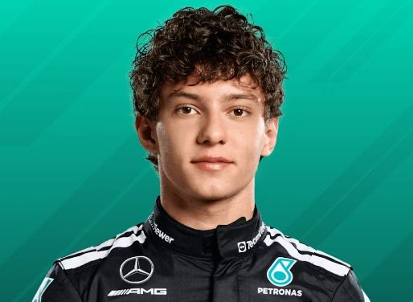

Kimi Antonelli
Andrea Kimi Antonelli es un piloto italiano de Mercedes. Tras destacar desde muy joven en karting y categorías inferiores, llegó a la Fórmula 1 en 2025. En 2026 se ha convertido en uno de los grandes protagonistas del campeonato, luchando por el título y logrando numerosas victorias y poles.
| Nacionalidad | Italia |
| Equipo actual | Mercedes |
| Grandes Premios | 40 |
| Victorias | 8 |
| Podios | 16 |
| Pole positions | 6 |
| Campeonatos | 0 |